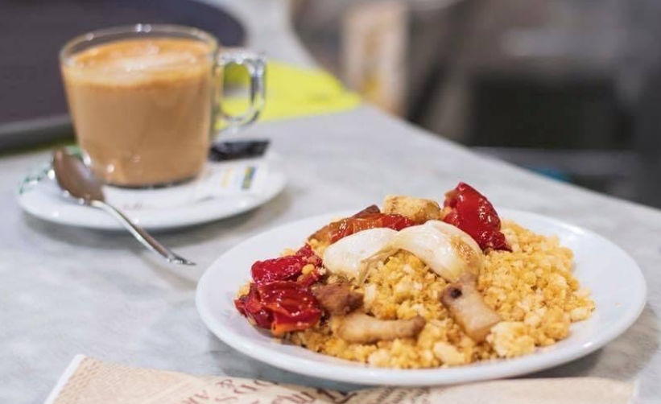

Tostada de aceite y tomate natural
Aceite de oliva virgen extra, sal y tomate natural triturado. 1,00€
Tostada de paté ibérico
Paté ibérico 100% extremeño. 1,00€
Tostada de cachuela extremeña
Cachuela 100% extremeña. 1,00€
Tostada de mantequilla y mermelada
Mantequilla y mermelada de fresa o melocotón. 1,00€
Tostada york y queso
Jamón de york y queso curado gratinado. 1,30€
Café + churros
Están disponibles hasta agotar existencias. 2,00€
Café + migas
Disponibles según temporada. 2,50€
Tostada de paleta ibérica extremeña
Paleta extremeña con tomate natural y aceite de oliva. 1,50€
Tostada vegetal

Mayonesa, lechuga, tomate natural, huevo cocido y atún. 1,50€
Tostada de sobrasada dulce y gratinada
sobrasada ibérica dulce y queso rallado gratinado. 1,50€